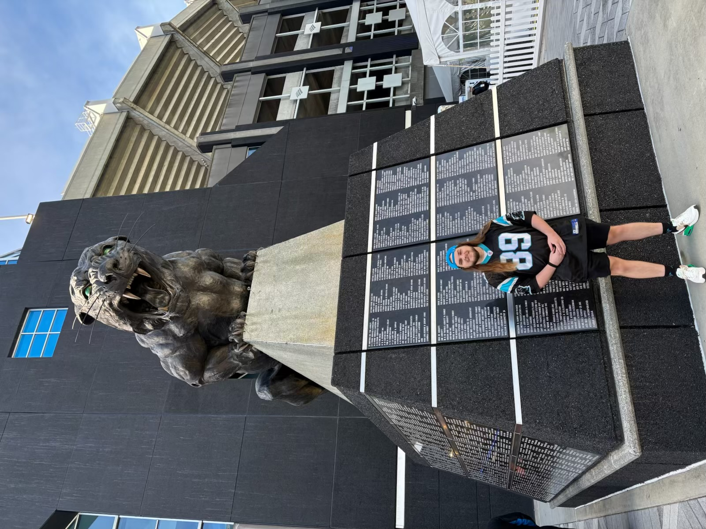
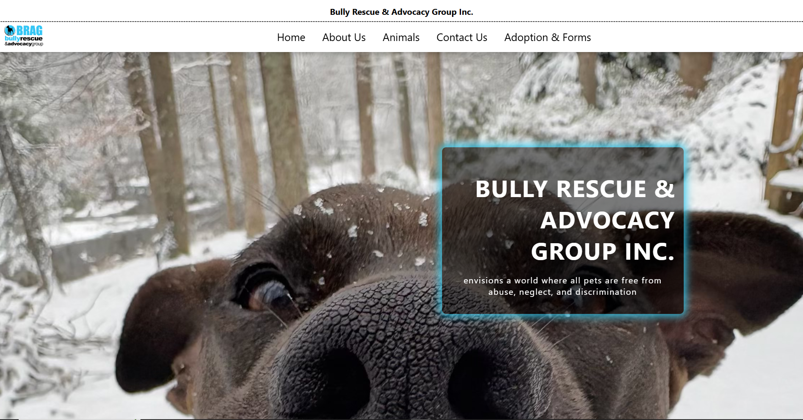
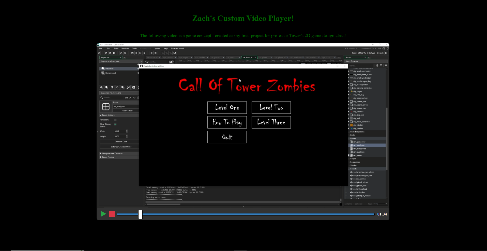
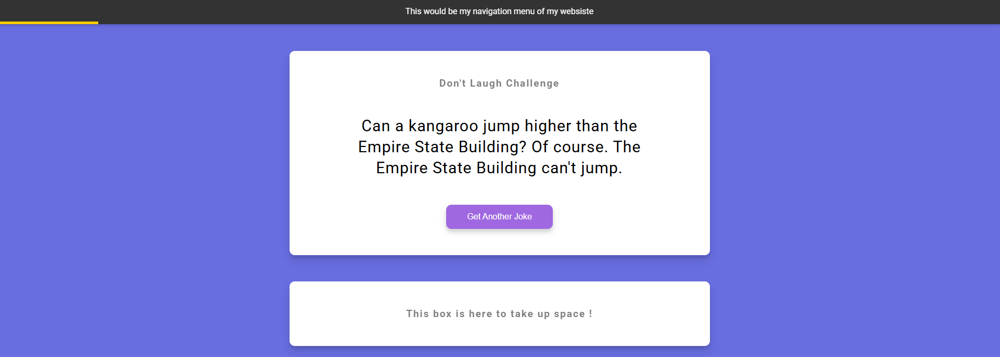
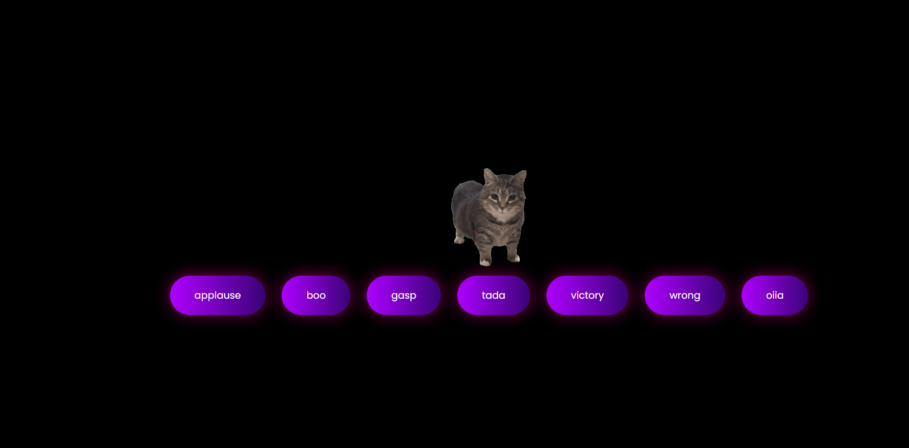
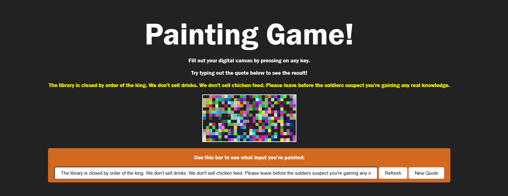
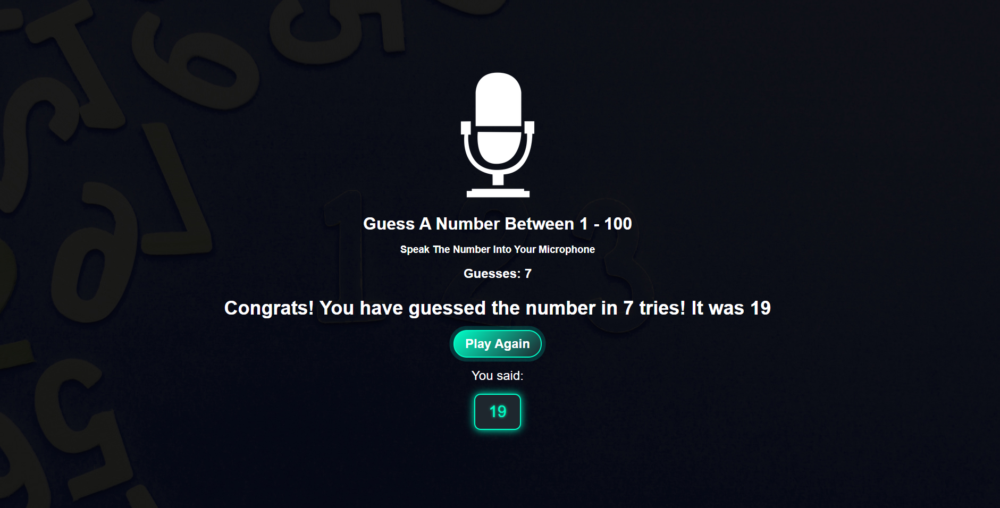
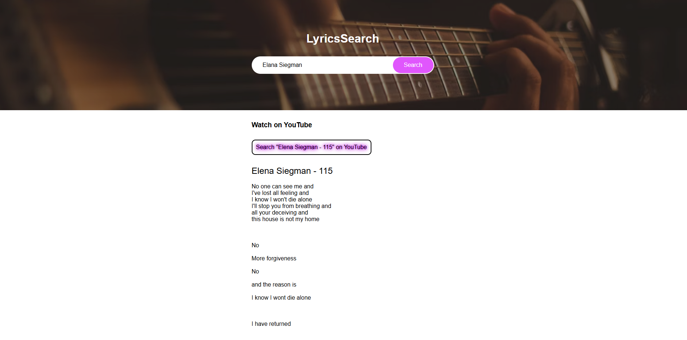

This page is dedicated to showcasing some of the web-based projects from my interdisciplinary web design class (CREA 330), the project I created for my seinor capstone class (IDST 499), and finally my favorite project from my time at VCU; the final project from my intro to 2D game design class (CREA 391).
First, Who Am I?

My name is Zachary White, most people know me by Zach.
My path to interdisciplinary studies was uncommon, to say the least.
I transferred to VCU, from CNU, in spring of 2022.
This was a rough time in my life as I had to drop out of CNU due to primarily financial reasons.
I spent a few semesters at VCU part time while working, hoping that something would push me towards making a decision on what major was right for myself.
Unfortunately, I never really found that one class which did it for me.
Nonetheless, I worked on through school. Eventually my indecisiveness caught up with me and a hold was placed on my account.
It turns out, if you wait too long to declare a major, VCU will automatically assign you to interdisciplinary studies.
Despite ignoring this, my hand was eventually forced, I had to set up a meeting with my advisor to formally declare / participate in the interdisciplinary studies program.
This meeting turned out to be one of the best possible things to happen to me.
I found out, through the help of my advisor, that I could graduate in as little as two full semesters if I really tried. I also learned that I had enough credits to accomplish a minor in history, another happy accident.
So, in the last three semesters, I have worked hard to fulfill all of my major and minor requirements and I will be graduiting in May!
The general focus areas of my interdisciplinary studies degrees are history and computer sciences, the specific title of the degree, which students create, is "Creative Practices in Computer Science and History" (I think).
Some of the types classes that I chose to make up this degree include various computer science classes, history classes, creative practices classes, and of course the major specific classes / capstone.
Some specific classes from these areas include: interdisciplinary web design, 2D game design, software engineering & web development, data science skills, cybersecurity skills, and a plethora of history classes covering topics ranging from the 70's, samurai Japan, and the age of total war in Europe.
While some people may view "interdisciplinary studies" with a negative connotation, I certainly did when I first heard of the program, I would not undervalue the importance it holds to me and my future.
This program gave me a way to graduate with a degree that means something to me, if nobody else.
I had the oppurtunity to take some really awesome classes which I would have never had the oppurtunity to take on a traditional major path, I have also had the oppurtunity to meet some really cool people who I would have never met otherwiste.
If I could go back, I would probably take the same path I put myself through, I truly do not think that there is any other program I could have put myself through.
But enough about me, below you will find some of the projects I have created this semseter!
IDST 499 Capstone Project: BRAG Website Redesign

I wont go into too much detail here, as the information about this project belongs elsewhere, but this poject is the result of my capstone class.
IDS students must selest a topic / problem and spend the semster doing accurate research in order to create a "project". These projects can take many shapes / forms, some make presentations, write papers, record video essays, and make physical items.
I decided that I would create a website, as that information was the most relevant to me at the time.
I have expereince with the company BRAG (Bully Rescue & Advocacy Group Inc.) As my dog came from them.
I was made aware that they have a poorly designed & outdated website, especially when compared to similar groups.
While I am in no way a professional web developer or designer, I knew that I could do something to bring some light to the topic.
So, I settled on creating a prototype of a redesigned website, which focused on creating a better first impression, sense of professionalism, and showcases my ability to use HTML, CSS, and Javascript.
I have received some pretty affirming words from my peers and teachers about my work on the website, and it is a project that I am pretty proud of overall.
While it may not be perfect, I think it is a good example of my capacity to learn and produce acceptable work.
I learned much about my skills and limits creating this project, I have much to learn about professional web design, but I also feel that this project affirms the idea that I can create somewhat impressive work.
You can find the original BRAG website here, and you can find my redesign, hosted on GitHub pages, here!.
Custom Video Player & Final Project For 2D Game Design

This example is a twofer!
This custom video player is one of the first projects we created in class. HTML, CSS, and Javascript were used to create a custom video player with play, pause, and stop functions.
This was also an introduction to video elements as I had never used them before.
Part of our objective in class is to take the code we are given and to customize it to make it our own. To accomplish this, I decided to upload my own video to the page and make that the focus.
The video is from a series of recordings following the development of my final project in my 2D game design class.
I aimed to create a game like the popular Call Of Duty zombies gamemodes and thus, Call Of Tower zombies was born, adorningly named after my professer.
This class and project really re-opened my eyes to the fun that is learning game design / development, which is a topic that I am going to continue to learn post graduation.
It was definetly one of the more enjoyable projects I have created over the past few semesters, and it serves as a testamant to how much I learned in game maker language and the effort I put into projects which I am passionate about.
I went far above and beyond what was required of me in the making of this project, simply because I was enjoying myself.
In the future, I would like to learn how to develop 3D games in Unity and get into making experiences in Roblox.
It would be cool to land a professional job in this industry, but the learning curve for me would be massive, thus I think it is best for this area to remain as a hobby for now.
If you are interested in watching this video, or checking out the custom video player. You can click here
Dad Jokes & API'S

This was another early project we created in class.
This project required us to use HTML, CSS, and Javascript to interact with an API to display "dad jokes" to the page.
This was an interesting project as it was my first experience with an API, a topic that I will definetly have to continue to explore in a professional manner.
In customizing this particular project, I used HTML, CSS, and Javascript to create and style a progress bar which represents the users progress in terms of how much of the page they have scrolled through.
I saw this feature while doing research for my capstone project on a website and it is something I wanted to learn how to emulate, so I did so while completing this project.
If you are interested in viewing this page, you can click here.
Sound Board

This was one of my favorite projects of the class as I had the oppurtunity to have a little fun with my customization.
This project required us to use HTML, CSS, and Javascript to create a simple webpage with buttons that play a sound upon being clicked.
Javascript functions were used to create the buttons for each sound we had in an array, and then we used event handlers to make the buttons play / stop their respective audios.
I went a little crazy with my customizations for this project.
I played around with CSS a little, focusing on styling shadows so that they create a glowing effect, which I think looks pretty neat.
Additionally, I added my own custom sound to the page and a little surprise that pops up when you play it.
While it is not exactly perfectly synced, I still liked the effect and this project was an interesting learning point for myself as I wasn't sure if gif files would function properly.
It was also fun to style / modify shadows in CSS, I did not know that there were so many different effects you could accomplish.
If you are interested in viewing this page, you can click here.
Custom Painting / Typing Game

This was another project I had a lot of fun creating.
We were requried to create a small game or app which reacted to keyboard events. We were given a tutorial of a simple typing game in which the user is provided a random quote from an array and you had to type it out.
I decided that, in order to customize the project so that it was my own, I would add in new quotes and change the type of game.
I wanted to create a game in which pixels were randomly "painted" to a canvas upon a keystroke. I decided that I would keep the typing / quote aspect of the tutorial project to give the user a reason to type.
I think it turned out pretty cool and every time you play the game, you get a random painting, it also served as a good introduction to the canvas element, as that was something that I had to do a little self teaching about.
If you are interested in viewing this page and my code, you can click here.
Speaking Number Guessing Game

This was one of the more interesting projects we completed this semseter.
We used HTML, CSS, Javascript, and speech recognition to create a game that generates a random number and requires the user to guess aloud the number.
In customizing this project, I focused less on adding new features, instead I fleshed out the code we were given to handle a "game over" state.
Without customization the game would continually listen to and display microphone input even if you guessed the correct number.
I modified the Javascript so that the microphone would stop listening upon correctly getting the number, I also added a score / guess tracker to make the game a little more personal.
Finally, I played with styling and CSS more, I was really captivated with glowing things in CSS this semester. I've previously only worked with very simple and subtle shadows, I had much more fun making things glow.
If you are interested in playing this game, you can click here.
Lyrics Search App

This was another interesting project that worked with the lyrics.ovh API to create an app that lets the user search up an artist / song and get the lyrics displayed to them.
In customizing this app I learned a little bit about the limitations of my knowledge.
I initially wanted to make the youtube video of the specific song play / appear with its lyrics.
I tried to work with A.I to troubleshoot my issue or create a work around, but something was constantly wrong with my generated YouTube url.
So, I decided to compromise, rather than display the video, I created a button that searches up the song title and artist on youtube.
This link opens up in a new window so the user can listen to the song if they wanted to.
Though it is not the effect that I'd wanted, I still liked adding this feature and it added a simple, yet necessary, layer to the app to make it more of my own.
This is another one of those projects where I learned a lot and I found out that I still have a lot more to learn.
This Web Portfolio!
I felt that putting a screenshot of this webpage on itself would be redundant, so enjoy the gif of the cat lol.
While this portfolio is not nearly as heavy on the Javascript / functionality side of things, it is still something that I created and am proud of.
I learned much about good vs bad practices with creating an appealing web page when creating my capstone project.
Looking back on that process, there is much that I would do differently, especially with HTML and CSS choices that I made in the early stages of the project.
I feel that these lessons are manifested in this portfolio, as my code and styling is much more clear and much less redundant.
There was also no "starter code" or "tutorial" to follow for something like this, so the function and design choices were all mine, and I like the way it looks so far.
So it only felt fair to include it in this list.
In Conclusion ...
It should be noted that these are simply my favorite projects from the past few semesters.
There are some that are not being mentioned here, including various history papers that I was particularly proud of, other projects from my web design classes, and some of the other games from my 2D game design class.
I simply chose the projects on this page as they are my favorite, or becasue the others felt like they didn't belong.
Ideally, I would keep growing and adding more projects to this page.
This is something I plan on doing, especially projects related to game development.
I'd really like to learn to make roblox games or unity games in my free time, hopefully making a project that people actaully want to enjoy.
Overall, I have learned a lot of valuble information over the past few semesters, and I hope that is represented in both this portfolio and the examples of my work included in it.
Contact Information
Here are some different methods of contacting me! I would love to hear some feedback and / or advice!